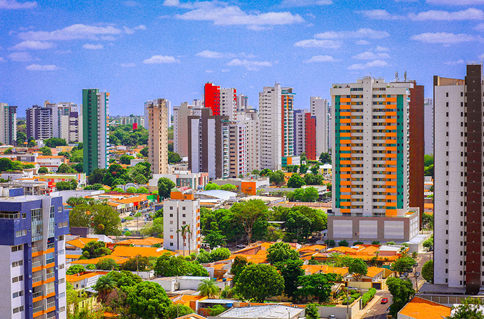

Teresina
Teresina, a capital do Piauí, é uma cidade que encanta com sua história, cultura e belezas naturais. Conhecida como a "Cidade Verde", Teresina é cortada pelo Rio Parnaíba e oferece uma atmosfera acolhedora. É um destino ideal para quem busca explorar o Nordeste brasileiro.

Teresina
Ponte Estaiada
A Ponte Estaiada é um dos marcos modernos de Teresina. Com sua arquitetura única, a ponte oferece uma vista espetacular do Rio Parnaíba e da cidade. À noite, as luzes dão um espetáculo à parte, criando uma paisagem deslumbrante.
Centro Cultural
O Centro Cultural de Teresina abriga uma rica coleção de arte e exposições que celebram a cultura local. Você encontrará galerias de arte, apresentações culturais e eventos que destacam a rica herança do Piauí.
Cuscuz com Carne de Sol
O cuscuz com carne de sol é um prato tradicional do Nordeste e é muito apreciado em Teresina. O cuscuz é preparado com massa de milho cozida a vapor e servido com carne de sol, que é carne bovina seca e curada. Uma verdadeira iguaria nordestina.
Tapioca
A tapioca é uma das delícias mais simples e populares de Teresina. Feita a partir da goma de mandioca, é preparada com diversos recheios, como queijo, coco, chocolate e muito mais. Uma opção de lanche rápida e deliciosa.